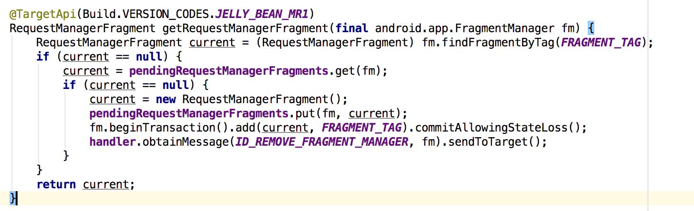

glide架构图
 glide架构分析
glide架构分析
glide配置：通过GlideModule配置
public class MyGlideModule implements GlideMGlideModuleodule {
@Override
public void applyOptions(Context context, GlideBuilder builder) {
//设置图片格式、设置缓存目录、设置内存和硬盘缓存大小等
buidler.setDecodeFormat(DecodeFormat.PREFER_ARGB_8888);
}
@Override
public void registerComponents(Context context, Glide glide) {
//注册自定义组件
glide.register(MyDataModel.class, InputStream.class, new MyUrlLoader.Factory());
}
}
注册组件的目的就是告诉Glide，当我们调用load(xxxx)方法时，应该用什么方式来获取这个xxxx所指向的资源。register的第一个参数就是我们load(xxxx)的类型，第二个参数是对应的输入流，而第三个参数就是定义获取资源的方式。
Glide(Engine engine, MemoryCache memoryCache, BitmapPool bitmapPool, Context context, DecodeFormat decodeFormat) {
//Glide默认注册的组件.
register(File.class, ParcelFileDescriptor.class, new FileDescriptorFileLoader.Factory());
register(File.class, InputStream.class, new StreamFileLoader.Factory());
register(int.class, ParcelFileDescriptor.class, new FileDescriptorResourceLoader.Factory());
register(int.class, InputStream.class, new StreamResourceLoader.Factory());
register(Integer.class, ParcelFileDescriptor.class, new FileDescriptorResourceLoader.Factory());
register(Integer.class, InputStream.class, new StreamResourceLoader.Factory());
register(String.class, ParcelFileDescriptor.class, new FileDescriptorStringLoader.Factory());
register(String.class, InputStream.class, new StreamStringLoader.Factory());
register(Uri.class, ParcelFileDescriptor.class, new FileDescriptorUriLoader.Factory());
register(Uri.class, InputStream.class, new StreamUriLoader.Factory());
register(URL.class, InputStream.class, new StreamUrlLoader.Factory());
register(GlideUrl.class, InputStream.class, new HttpUrlGlideUrlLoader.Factory());
register(byte[].class, InputStream.class, new StreamByteArrayLoader.Factory());
}
GlideModule的初始化：manifest.xml配置meta-data节点，Glide在调用get(context)时读取并初始化。
glide生命周期管理：使用挂载fragment的方式监听Activity生命周期。  对于图片请求会在onStop的时候自动暂停，然后在onStart的时候重新启动，gif的动画也会在onStop的时候停止，以免在后台消耗电量， 此外，当设备的网络状态发生改变的时候，所有失败的请求会自动重启，保证数据的正确性。
glide默认的远程下载使用HttpURLConnection，相关类见：HttpUrlGlideUrlLoader 和 HttpUrlFetcher，如果使用okHttp，需要使用官方依赖库：okhttp3-integration
public class MyGlideModule implements GlideModule {
...
@Override
public void registerComponents(Context context, Registry registry) {
//使用定义的OkhttpClient替换原有的请求
registry.replace(GlideUrl.class, InputStream.class, new OkHttpUrlLoader.Factory());
}
}
glide图片变换：使用transform接口，第三方库glide-transformations包含很多常用变换
glide动画: 使用animate接口，表现图像到图像的平滑过渡
glide的缓存比Picasso复杂，Picasso只缓存了全尺寸的图片，而 Glide 不仅缓存了全尺寸的图，还会根据 ImageView 大小所生成的图也会缓存起来
glide支持gif和video
glide默认不支持webp，需要借助第三方库：GlideWebpSupport（其依赖fresco-webp实现库）
glide最新大版本：Glide v4